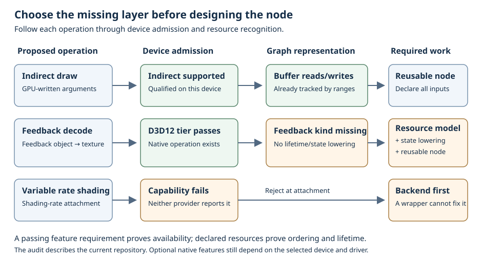

Reject unsupported nodes at attachment
Declare required hardware and runtime features so the graph can reject unsupported nodes before setup.
Learning objectives and prerequisites
After this chapter you can author a node's admission hook, predict when a failed attachment stops setup, distinguish an explicit requirement from inferred descriptor facts, and select a fallback without hiding dependencies. Read the typed node contract, parameter snapshots, and graph edit lifetime first.
A capability is a qualified fact about the current device, not a promise attached to a backend name. The public FArdaRHIFeatureRequirements describes portable D3D12/Vulkan needs; FArdaDependencyNodeRequirements adds CUDA and application environment checks.
Availability and resource effects are separate contracts
Admission asks whether the selected environment can perform an operation. Dependency compilation asks when its inputs are available and how long its outputs live. A ray-capable device can still receive an invalid graph that omits a TLAS dependency. Likewise, a perfectly ordered graph can request a work-graph pipeline on a provider that does not implement work graphs.
All selected requirements are conjunctive: each requested feature, minimum limit and environment predicate must pass. Within a nonempty allowed-CUDA-mode list, any one listed mode is acceptable. A false requirement flag means that the node imposes no requirement on that feature; it does not require the feature to be absent. Features used conditionally are selected from immutable public parameters.

Override the common node hook
The common TArdaNodeDefinition base provides an empty GetRequirements(const FArdaParameters&). A derived class overrides the contract by declaring the same static function. This is CRTP dispatch through the concrete node type: do not add the C++ override keyword or a virtual function. The signature is checked with the other node hooks.
The compiled work-graph node header declares this hook. Its implementation is:
FArdaDependencyNodeRequirements
FArdaWorkWriteNode::GetRequirements(const FArdaParameters&)
{
FArdaDependencyNodeRequirements R;
R.mFeatures.Require("work-graph.dispatch");
return R;
}The renderer invokes the header's named WorkWrite operation inside an edit. With an initialized device and the recipe implementation linked, the relevant assembly is:
FArdaDependencyGraph Graph(Device);
FArdaGraphEdit Edit(Graph);
auto Work = WorkWrite(Edit, {{}, 123}, "write");
if (!Work)
return Edit.GetStatus();
// Continue using Work.GetBuffer("Output") in consumer operations.This excerpt stops at attachment; the complete work-graph recipe wires a separate readback, compiles and executes. A qualified D3D12 work-graph device proceeds to output declaration and preparation. Vulkan returns Unsupported before those hooks because its provider has no work-graph implementation. The diagnostic identifies instance write, definition recipe.work-write and the missing work-graph ability.
Registering the class with FArdaWorkWriteNode::Register() remains device-independent and performs no admission check. Registration publishes the operation for discovery; each graph attachment checks its own environment.
Check support before authoring an invocation
FArdaMyNode::FArdaParameters Parameters{};
auto Status = FArdaMyNode::CheckRequiredFeatures(Device, Parameters);
if (!Status)
return Status; // mCode and mMessage explain the failure.
FArdaGraphEdit Edit(Graph);
FArdaMyNode::Invoke(Edit, Parameters);
if (auto S = Edit.Commit(); !S)
return S;
return Graph.CompileAndWait();Every node definition inherits this static function. It accepts either a device reference or a const IArdaRHIDevice*, returns FArdaRHIStatus, and performs no resource preparation, command recording, submission or wait. It checks the selected route's explicit requirements and intrinsic node/stage features. Success means those requirements passed; Unsupported reports missing abilities; malformed declarations return InvalidArgument; throwing requirement callbacks return BackendFailure. Descriptor-derived requirements are checked later when descriptors exist. A null device does not prove an intrinsic feature available.
The compiler runs FArdaCheckRequiredFeaturesRule before optimization and checks every authored node, including nodes later culled. Cached compilations and custom compiler rule lists retain mandatory feature validation. Environment changes after attachment therefore cause compilation to fail instead of reusing an obsolete support decision. Predicates can run multiple times and must remain read-only. The application must still keep the environment valid between compilation and execution.
Select requirements from public parameters
A TLAS build node needs top-level acceleration structures. Its update and compaction requirements depend on the requested build flags. Cornell's independent TLAS node implements the following hook:
FArdaDependencyNodeRequirements
FArdaCornellBuildTlasNode::GetRequirements(const FArdaParameters& P)
{
FArdaDependencyNodeRequirements R;
R.mFeatures.Require("ray-tracing.acceleration-structure");
R.mFeatures.Require("ray-tracing.top-level-acceleration-structure");
if (HasAnyFlags(
P.mBuildFlags,
EArdaRHIAccelStructBuildFlags::AllowUpdate |
EArdaRHIAccelStructBuildFlags::PerformUpdate))
{
R.mFeatures.Require("ray-tracing.acceleration-structure-update");
}
if (HasAnyFlags(
P.mBuildFlags, EArdaRHIAccelStructBuildFlags::AllowCompaction))
{
R.mFeatures.Require("ray-tracing.acceleration-structure-compaction");
}
return R;
}Here P.mBuildFlags is part of the node's frozen public parameters and canonical identity. An ordinary build does not require update support merely because the implementation can also update. A later update still needs a compatible previously built AS and correctly declared graph accesses; passing this hook does not establish those invariants. See the ray-tracing assembly for BLAS/TLAS/trace dependencies.
The hook runs before Validate, output resolution and prepared-state construction. It receives public inputs, which may include empty output handles or invalid dimensions. Select requirements defensively; do not dereference a possibly empty resource or divide by an unchecked dimension. Leave ordinary shape and argument diagnostics to Validate. Do not rely on a compiler-filled output handle or cast parameters to the base's private prepared schema.
Two admission phases protect different boundaries
The attachment sequence is intentionally ordered. Explicit requirements prevent unsupported setup, while inference catches recognizable needs that become visible only after the node describes its operation.
- Check explicit requirements. After confirming the registered definition and public parameter type, the graph calls
GetRequirementsand checks it against its current device. This happens beforeDeclareResources,Validate,PrepareandCreateInstance. A CUDA-kind attachment with a real device also requires a qualified CUDA launch path. - Resolve outputs and identity.
DeclareResourcesfills or validates logical outputs. The graph computes canonical identity. A matching existing node is checked again using its retained requirements and returned without running new preparation. - Prepare a new instance. The class base validates public parameters, obtains immutable device state and creates per-instance state. It then calls
Describe. - Check inferred requirements. The graph combines explicit requirements with recognized pipeline, binding and resource facts. With a device, it checks that set before generating graph binding layouts or inserting the node. A failed check removes provisional output declarations from this attachment.
- Compile and execute later. A successful attachment retains its description.
Edit.Commit()queues the edit.CompileAndWait()selects a matching cached revision or resolves dependencies, infers pipeline patterns and retains a logical allocation plan. First submission materializes native resources and PSOs, prepares per-frame bindings/tables and lowers the execution program before submitting it.
The retained FArdaDependencyNodeDesc::mRequirements is graph-populated output. Do not assign explicit requirements to it in Describe: attachment replaces that field with the hook's result before inference. Put author requirements in the hook so they also protect early setup.
Admission itself is read-only CPU work and issues no GPU submission or wait. Inference can prevent graph binding creation, but it happens after node preparation; declare a feature explicitly if it must be checked before compiling that feature's shader or constructing its device state. Successful attachment is not the final validation of native resource formats, pipeline combinations, memory capacity or execution inputs.
One class contract for registration and attachment
Typed attachment delegates to the common class base. Attachment by registered name looks up the same class executable and checks the same public parameter type. Explicit requirements are selected from the new parameter snapshot on every call, including repeated invocations with matching parameters.
Override GetRequirements(const FArdaParameters&) on the node class. mFeatures.Require uses the same shared keys as backend startup and combines repeated constraints for one key. Invalid names and value ranges that cannot satisfy the required bits return InvalidArgument during admission and are rejected by the graph archive. A node whose public parameters include mSampleCount can use it to select the required descriptor capacity.
static FArdaDependencyNodeRequirements GetRequirements(const FArdaParameters& Parameters)
{
FArdaDependencyNodeRequirements Requirements;
if (Parameters.mSampleCount)
{
Requirements.mFeatures.Require("descriptor.resource-capacity", Parameters.mSampleCount);
}
return Requirements;
}Built-ins, application operations and CUDA nodes all follow this contract. The registry's executable records are framework-owned inspection data. Their constructors and registration function are private; applications cannot submit arbitrary callback records. Device preparation and instance storage are retained by the base, without a separate public execution schema.
Include every behavior-affecting parameter in the canonical key. A cached successful attachment on another device or with another parameter value is not an admission verdict for this call.
What descriptor inference can recognize
Inference examines declarations, not callback instructions or shader source. It recognizes graphics/mesh queue needs, mesh and work-graph families, ray pipeline/table use, geometry/tessellation stages, stages seeded in complete configurations, and ray configurations that permit opacity micromaps. It recognizes AS accesses, indirect argument states, shading-rate states, texture copy/resolve states and virtual/tiled resource descriptions. This closes admission holes for declared operations without requiring each author to repeat every obvious flag.
For bindless layouts, inference distinguishes resource and sampler direct indexing, runtime/unbounded arrays, update-after-bind, variable counts, descriptor buffers and capacities. It also checks whether a table needs partially bound descriptors. A table whose supplied entries are dense below its chosen size can still have holes in the full fixed layout extent; multiple banks can retain fixed extents even when one binding is variable. The relevant fact is the native declared extent, not merely the number of supplied entries.
Inference does not discover inline ray queries, native float16/int8 instructions, library versions, external algorithm constraints or all accesses hidden behind a GPU-selected index. Declare such needs explicitly. A declared indirect argument state establishes general indirect-command admission; indirect ray dispatch also needs the separate indirect-ray requirement. The provider's local shader-table payload capability does not guarantee every local descriptor model: Vulkan still requires its qualified direct-heap path for local descriptors.
A recognized capability is not a new executable operation. Sparse capability inference does not make the memory planner support tiled storage, and an opacity-micromap state does not add a missing graph micromap handle. The modularity summary explains these boundaries.
CUDA and application environment checks
CUDA uses the device's separate FArdaCudaCapabilities snapshot. PixelSort's surface operand explicitly returns both CUDA launch and CUDA surface requirements:
FArdaDependencyNodeRequirements
FArdaPixelSortSortNode::GetRequirements(const FArdaParameters&)
{
FArdaDependencyNodeRequirements R;
R.mbRequireCuda = true;
R.mbRequireCudaSurfaces = true;
return R;
}A buffer-only CUDA operation should not add the surface requirement. Layered surfaces have their own requirement, and minimum architecture, threads per block and dynamic shared memory can further constrain admission. A nonempty mAllowedCudaLaunchModes admits only those qualified modes. Leave it empty to accept any available framework mode; None is invalid as an allowed mode. Surface failure can coexist with a working buffer launch path. The hook does not create a CUDA context, change the selected mode, convert a surface kernel to a buffer kernel, or prove binary/capture compatibility.
A CUDA node uses TArdaNodeDefinition with EArdaNodeType::Cuda and declares its required capabilities through this hook. Its Prepare method creates the operand and checks GetOperandSupport(). The parameter schema uses ARDA_NODE_CUDA_BUFFER or ARDA_NODE_CUDA_TEXTURE to inherit resource contracts from the operand schema. PrepareCuda calls ResolveNodeCudaParameters before appending the operand to its sequence. The graph checks actual sequence bindings against that node's declarations before dispatch.
For an application library, plugin version, driver qualification or another condition not represented by portable capabilities, add a named FArdaDependencyEnvironmentRequirement to mEnvironment. Its callback receives a borrowed const IArdaRHIDevice& and returns a status. Return success when the application condition is satisfied; otherwise return a useful reason. The graph combines that reason with the predicate name and other missing abilities.
Both requirement selection and predicates must be read-only: do not allocate GPU resources, load or initialize a mutable global service, submit commands, wait for the GPU, retain the borrowed device, or mutate external state. Query stable, already established environment facts. Predicates may be evaluated more than once during public preflight, attachment and compilation, so do not make them consume state. The application must keep required libraries and device state valid for retained nodes between compilation and execution.
Optional compute shader alternative
A CUDA node opts in by adding the following hook alongside PrepareCuda. Omit it to make CUDA mandatory. CUDA remains preferred on devices with a qualified CUDA mode; when CUDA is unavailable, the graph selects the alternative before DeclareResources, Prepare or CreateInstance, and schedules an ordinary compute node.
static FArdaRHIStatus RecordComputeAlternative(
FArdaDependencyExecutionContext& Context,
const FArdaParameters& Parameters,
const FArdaState& State,
FArdaInstanceState& Instance);
static FArdaDependencyNodeRequirements GetComputeAlternativeRequirements(
const FArdaParameters& Parameters)
{
FArdaDependencyNodeRequirements Requirements;
// Declare the compute implementation's portable/environment needs here.
return Requirements;
}Implement the alternative hook with the normal Arda RHI compute state and dispatch APIs. Use inherited UsesComputeAlternative(Device.Get()) in shared Prepare to create the selected route's state, and let Describe contribute that route's pipelines and bindings. During DeclareResources, Context.GetDevice() exposes a borrowed device pointer for choosing flags such as mbCudaInterop; the framework preserves explicit allocation flags. The public parameters and resource effects remain the same operation. CUDA parameter mappings describe UAV accesses shared by both routes; supply compute shader bindings explicitly in the selected description with compatible resource states. CUDA argument memory is not a shader constant layout.
GetRequirements describes the CUDA route; GetComputeAlternativeRequirements independently describes the compute route and defaults to an empty explicit list. Declare common requirements in both lists. CUDA-specific requirements are never silently stripped from an authored list. CheckRequiredFeatures uses the same route selection. Missing CUDA with no alternative, or missing features on the selected alternative, returns Unsupported. A failure after CUDA recording or submission never triggers a compute retry. Device-free graph analysis retains its existing semantic-only policy and does not select an execution route.
Unknown limits, queue fallback and device-free analysis
An explicit positive minimum must be proved by the reported limit. Zero for an unavailable or unqueryable capability limit is not treated as unlimited. For example, an explicit positive ray-payload minimum fails when the device cannot report that limit. Inferred ray configuration checks defer an unqueryable native payload limit to actual pipeline creation instead of inventing support. Choose explicit constraints only when the algorithm truly requires them and the environment can establish them.
The subgroup-width interval is a conservative constraint on the whole reported device interval. Requiring 32 through 32 does not request a 32-lane mode; it accepts only a device whose qualified subgroup interval fits entirely within 32 through 32. A device reporting 32 through 64 therefore fails. If an operation can tolerate both widths, state that range and make the shader correct for both.
A compute node does not automatically require a dedicated compute queue, and a copy node does not automatically require a dedicated copy queue. ArdaInductor retains its normal queue placement and fallback, including compute/copy work on graphics when appropriate. Explicitly requiring a dedicated family turns a scheduling preference into a hard admission condition. Only do that when the operation depends on it. Queue availability and dedicated-family identity still do not guarantee simultaneous hardware execution.
A graph constructed without a device validates requirement declarations and retains explicit feature, CUDA and named environment requirements for destination-device compilation. Offline attachment does not query capabilities or invoke environment predicates. Graph-only declaration hooks can author and preprocess these graphs, and serialization preserves their requirements. Compilation checks the destination device before preparing execution state; missing capabilities or failed environment predicates reject compilation. Device-backed authoring also checks requirements during attachment.
Failure, rollback and retry
Unsatisfied portable features, CUDA requirements and custom environment checks return an aggregated Unsupported status. The graph prefixes the diagnostic with the instance name and registered definition, making it possible to identify the operation in a large library. An empty predicate name, missing predicate function or invalid CUDA mode declaration is a malformed contract and returns InvalidArgument.
An early explicit rejection happens before output declaration and preparation. A later inferred rejection can occur after preparation, but no node is inserted and provisional graph outputs from that attachment are rolled back. The edit retains its first error, so later operations and commit fail. Cancel it and start a fresh edit to recover. Previously queued edits and cached revisions remain intact. Rollback cannot undo arbitrary external side effects performed by an author's hooks, which is why those hooks must follow their side-effect rules.
Respond to an unsupported feature by selecting a compatible node or parameter variant, supplying a correctly qualified device, or cancelling the edit. Do not continue using an invalid returned handle. Failed checks are not cached as permanent rejection. Repeating attachment re-evaluates the current requirements and environment; matching successful nodes continue to reuse prepared state. The optional CUDA compute alternative is an explicitly authored route; other unsupported algorithms are not automatically replaced.
Three common authoring errors are particularly misleading:
- Requirements only in
Describe().mRequirements: the graph overwrites this output field. Move explicit requirements intoGetRequirements. - Feature discovery inside
Record: the node has already attached and may be part of accepted work. Move stable admission to the hook while keeping operation-specific runtime validation where needed. - Omitted resources after a passing capability check: support does not establish dependencies. Declare indirect arguments, every possible bindless target and external-library workspace/effects.
Which native features still need modular work
The accompanying repository source audit maps every exposed capability group to its current integration level. That Markdown document links implementation evidence in the repository; this HTML chapter and the linked API contracts provide the admission workflow without requiring source access.
- Already automatically represented: ordinary buffer/texture resources, shader bindings, bounded bindless declarations, shader parameters, graphics/compute/mesh/ray/work pipeline requests, ray tables, range hazards, supported queue transitions and ordinary transient allocation. CUDA operands expose their declared data effects and are coalesced into framework sequences.
- Existing resource model, missing generic operations: indirect draw/dispatch/rays, texture-to-texture copy, resolve and texture clears. AS imports and Cornell's AS operation nodes exist, but general node-owned AS construction and a public build/update/compaction library remain incomplete.
- Missing resource/effect models: sampler feedback, opacity micromaps, sparse mappings/residency, versioned resource collections and general external synchronization. Retaining a native object inside an opaque callback does not make its effects recognizable.
- Incomplete parameter paths: automatic ray-local bindless descriptors and their index/address relocation. Vulkan's direct-heap local descriptor restriction remains relevant even when local shader-table arguments are reported.
- Backend work is still required: VRS and conservative rasterization are not reported by either provider; Vulkan work graphs/feedback and D3D12 OMM are unsupported. Shader bundles are facade iteration over compute/mesh records, not a native work graph that ArdaInductor expands automatically.
Use the diagram's decision process for a new operand: first establish native availability, then confirm the graph can represent every resource and effect, then package a reusable operation. Feature admission improves the first step and catches recognizable requirements; it does not silently claim completion of the other two.
Summary and checkpoints
Requirements belong to the operation's public contract. Static hook dispatch provides the same contract for every built-in, application node and operand adapter. The graph checks explicit needs before setup, infers visible descriptor needs before graph binding preparation, and preserves normal dependency, lifetime and backend validation.
- A work-graph node has an explicit hook. Which hooks run before Vulkan rejects it? Requirement selection runs; output declaration, validation and preparation do not.
- A node's description requests a mesh pipeline but its explicit hook is empty. Can preparation already have run before rejection? Yes. Declare mesh support explicitly to protect that earlier setup.
- A node was admitted in a previous construction, but its environment predicate now fails. Does invoking the operation bypass admission? No. Every invocation checks current requirements, and the edit reports the failure.
- A device-free graph declares explicit requirements and describes a ray pipeline. Are requirements discarded? No. Explicit and inferred requirements remain in the graph and its archive, and compilation checks them against the destination device. Declaration hooks must still support device-free analysis.
- Two descriptors index different slots that overlap the same bytes. Can their writers run independently after admission succeeds? No. Hazard analysis resolves the underlying views.
Further reading
Continue with complete node recipes, resource versioning and ranges, ArdaInductor scheduling, and execution and retirement. Inspect the canonical requirement-check contract, portable feature evaluation, and environment predicate contract for exact fields, errors and lifetime rules.